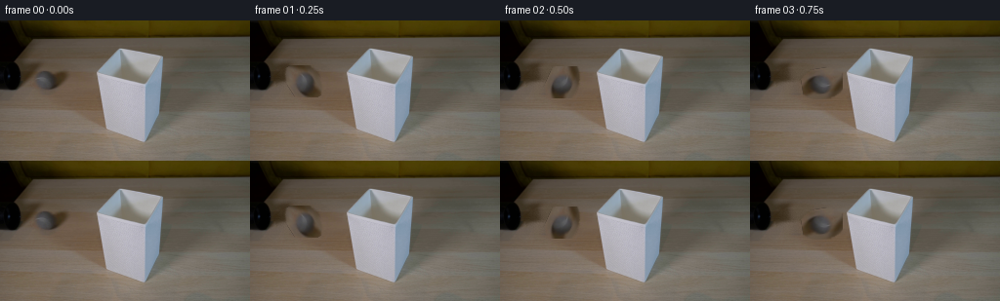
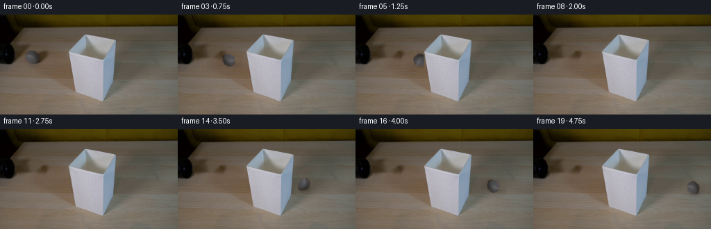
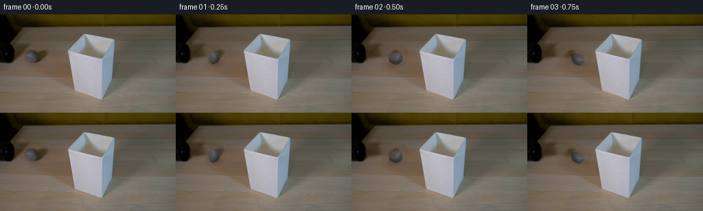

CODING AGENTS AS PIXEL WORLD MODELS
traex/DeepSeek-V4.1-Flash · 0146
点击播放 · 原生 RGB 像素
逐轮保存的候选
回放视频、检查图与代码变化。
每份候选均可单独播放。实际图片检查记录在下方工具轨迹中。
候选 01播放与检查图
点击播放 · 原生 RGB 像素


展开代码变化
--- 上一保存版本
+++ 本次保存版本
@@ -0,0 +1,187 @@
+from pathlib import Path
+
+import cv2
+import numpy as np
+from PIL import Image
+
+import artifact_io
+
+
+WIDTH = 256
+HEIGHT = 144
+N_FRAMES = 20
+FPS = 4
+
+
+def _ellipse_alpha(cx, cy, rx, ry, feather=1.2):
+ yy, xx = np.mgrid[:HEIGHT, :WIDTH].astype(np.float32)
+ radius = np.sqrt(((xx - cx) / rx) ** 2 + ((yy - cy) / ry) ** 2)
+ return np.clip((1.0 + feather - radius) / feather, 0.0, 1.0)
+
+
+def _make_ball_sprite(frame):
+ """Extract the reference ball, including its fuzzy edge and shading."""
+ cx, cy = 44.5, 61.5
+ rx, ry = 15.7, 10.7
+ alpha = _ellipse_alpha(cx, cy, rx, ry, feather=1.35)
+ pad = 5
+ x0 = int(np.floor(cx - rx)) - pad
+ x1 = int(np.ceil(cx + rx)) + pad
+ y0 = int(np.floor(cy - ry)) - pad
+ y1 = int(np.ceil(cy + ry)) + pad
+ crop = frame[y0:y1, x0:x1].copy()
+ a = alpha[y0:y1, x0:x1, None]
+
+ # Remove the warm table contribution that survives at the elliptical edge.
+ local_alpha = a[:, :, 0]
+ low = local_alpha < 0.62
+ chroma = crop.max(axis=2).astype(np.float32) - crop.min(axis=2).astype(np.float32)
+ warm = (crop[:, :, 0].astype(np.float32) - crop[:, :, 2].astype(np.float32)) > 13
+ cut = low & warm & (chroma > 14)
+ local_alpha[cut] = 0.0
+ local_alpha = cv2.GaussianBlur(local_alpha, (3, 3), 0.55)
+
+ rgba = np.dstack((crop, np.clip(local_alpha * 255.0, 0, 255).astype(np.uint8)))
+ return rgba, (cx, cy, x0, y0)
+
+
+def _make_static_plate(frame, ball_info):
+ """Remove the ball and its immediate contact shadow from the plate."""
+ cx, cy, _, _ = ball_info
+ plate = frame.copy()
+ yy, xx = np.mgrid[:HEIGHT, :WIDTH].astype(np.float32)
+ hole = (((xx - cx) / 18.0) ** 2 + ((yy - cy) / 12.5) ** 2 <= 1.0).astype(np.uint8)
+ hole = cv2.dilate(hole, np.ones((3, 3), np.uint8), iterations=1)
+ plate = cv2.inpaint(plate, hole * 255, 4.2, cv2.INPAINT_TELEA)
+
+ # Inpainting is intentionally limited to the sprite area; retain the reference
+ # plate texture with a little grain so the repaired patch does not look plastic.
+ rng = np.random.default_rng(146)
+ grain = rng.normal(0.0, 1.25, (HEIGHT, WIDTH, 1)).astype(np.float32)
+ soft_hole = cv2.GaussianBlur(hole.astype(np.float32), (0, 0), 2.0)[:, :, None]
+ plate = np.clip(plate.astype(np.float32) + grain * soft_hole, 0, 255).astype(np.uint8)
+ return plate
+
+
+def _make_occluder(frame):
+ """Build a soft mask for the white lampshade in front of the rolling ball."""
+ lum = frame.mean(axis=2)
+ spread = frame.max(axis=2).astype(np.float32) - frame.min(axis=2).astype(np.float32)
+ bright = ((lum > 112.0) & (spread < 48.0)).astype(np.uint8)
+
+ count, labels, stats, _ = cv2.connectedComponentsWithStats(bright, 8)
+ component = 1 + int(np.argmax(stats[1:, cv2.CC_STAT_AREA]))
+ seed = (labels == component).astype(np.uint8)
+
+ contours, _ = cv2.findContours(seed, cv2.RETR_EXTERNAL, cv2.CHAIN_APPROX_NONE)
+ contour = max(contours, key=cv2.contourArea)
+ filled = np.zeros((HEIGHT, WIDTH), np.uint8)
+ cv2.drawContours(filled, [contour], -1, 255, cv2.FILLED)
+ filled = cv2.morphologyEx(filled, cv2.MORPH_CLOSE, np.ones((3, 3), np.uint8))
+
+ # The blue-grey right side of the shade belongs to the same physical object.
+ blue = (
+ (frame[:, :, 2].astype(np.float32) - frame[:, :, 0].astype(np.float32) > 9.0)
+ & (lum > 75.0)
+ ).astype(np.uint8) * 255
+ blue = cv2.morphologyEx(blue, cv2.MORPH_CLOSE, np.ones((5, 5), np.uint8))
+ joined = cv2.bitwise_or(filled, blue)
+ contours, _ = cv2.findContours(joined, cv2.RETR_EXTERNAL, cv2.CHAIN_APPROX_SIMPLE)
+ if contours:
+ contour = max(contours, key=cv2.contourArea)
+ filled = np.zeros((HEIGHT, WIDTH), np.uint8)
+ cv2.drawContours(filled, [contour], -1, 255, cv2.FILLED)
+
+ # Keep the hard silhouette crisp while giving the composite a subpixel edge.
+ return cv2.GaussianBlur(filled.astype(np.float32) / 255.0, (0, 0), 0.45)[:, :, None]
+
+
+def _rotate_rgba(sprite, angle):
+ h, w = sprite.shape[:2]
+ matrix = cv2.getRotationMatrix2D((w / 2.0, h / 2.0), angle, 1.0)
+ return cv2.warpAffine(
+ sprite,
+ matrix,
+ (w, h),
+ flags=cv2.INTER_LINEAR,
+ borderMode=cv2.BORDER_CONSTANT,
+ borderValue=(0, 0, 0, 0),
+ )
+
+
+def _ball_position(frame_index):
+ # A nearly constant rolling speed, with a very slight settling of the path.
+ u = frame_index / (N_FRAMES - 1)
+ x = 44.5 + 184.0 * u
+ y = 61.5 + 24.0 * u - 2.2 * np.sin(np.pi * u)
+ return float(x), float(y)
+
+
+def _shadow_layer(cx, cy):
+ yy, xx = np.mgrid[:HEIGHT, :WIDTH].astype(np.float32)
+ sx, sy = cx + 3.2, cy + 6.0
+ d = ((xx - sx) / 15.5) ** 2 + ((yy - sy) / 4.8) ** 2
+ shadow = np.exp(-2.2 * d).astype(np.float32)
+ return cv2.GaussianBlur(shadow, (0, 0), 2.3)
+
+
+def _composite_sprite(canvas, sprite, cx, cy):
+ h, w = sprite.shape[:2]
+ x0 = int(round(cx - w / 2.0))
+ y0 = int(round(cy - h / 2.0))
+ x1, y1 = x0 + w, y0 + h
+
+ dst_x0, dst_y0 = max(0, x0), max(0, y0)
+ dst_x1, dst_y1 = min(WIDTH, x1), min(HEIGHT, y1)
+ src_x0, src_y0 = dst_x0 - x0, dst_y0 - y0
+ src_x1, src_y1 = src_x0 + (dst_x1 - dst_x0), src_y0 + (dst_y1 - dst_y0)
+ if dst_x1 <= dst_x0 or dst_y1 <= dst_y0:
+ return
+
+ src = sprite[src_y0:src_y1, src_x0:src_x1]
+ rgb = src[:, :, :3].astype(np.float32)
+ alpha = (src[:, :, 3:4].astype(np.float32) / 255.0)
+ dst = canvas[dst_y0:dst_y1, dst_x0:dst_x1].astype(np.float32)
+ canvas[dst_y0:dst_y1, dst_x0:dst_x1] = np.clip(
+ dst * (1.0 - alpha) + rgb * alpha + 0.5, 0, 255
+ ).astype(np.uint8)
+
+
+def generate_frames():
+ case_dir = Path(__file__).resolve().parent
+ reference = np.asarray(Image.open(case_dir / "first_frame.png").convert("RGB"), dtype=np.uint8)
+ assert reference.shape == (HEIGHT, WIDTH, 3)
+
+ sprite, ball_info = _make_ball_sprite(reference)
+ plate = _make_static_plate(reference, ball_info)
+ occluder = _make_occluder(reference)
+
+ frames = np.empty((N_FRAMES, HEIGHT, WIDTH, 3), dtype=np.uint8)
+ frames[0] = reference
+
+ for i in range(1, N_FRAMES):
+ canvas = plate.copy()
+ cx, cy = _ball_position(i)
+
+ shadow = _shadow_layer(cx, cy)[:, :, None]
+ canvas = np.clip(canvas.astype(np.float32) * (1.0 - 0.24 * shadow), 0, 255).astype(np.uint8)
+
+ angle = -57.0 * i
+ rotated = _rotate_rgba(sprite, angle)
+ _composite_sprite(canvas, rotated, cx, cy)
+
+ # Restore the physical foreground object over the moving ball and shadow.
+ mixed = canvas.astype(np.float32) * (1.0 - occluder) + reference.astype(np.float32) * occluder
+ frames[i] = np.clip(mixed + 0.5, 0, 255).astype(np.uint8)
+
+ return frames
+
+
+def main():
+ case_dir = Path(__file__).resolve().parent
+ frames = generate_frames()
+ artifact_io.save(frames, case_dir)
+
+
+if __name__ == "__main__":
+ main()
候选 02播放与检查图
点击播放 · 原生 RGB 像素

展开代码变化
--- 上一保存版本
+++ 本次保存版本
@@ -65,35 +65,37 @@
def _make_occluder(frame):
"""Build a soft mask for the white lampshade in front of the rolling ball."""
+ # The shade has a matte white face, a blue-grey right flank, and a scalloped
+ # lower hem. A compact traced silhouette avoids pulling in the table.
+ silhouette = np.array(
+ [
+ [122, 28], [134, 29], [147, 32], [158, 35], [166, 37],
+ [166, 47], [165, 61], [164, 79], [161, 94], [156, 107],
+ [151, 117], [147, 124], [138, 123], [124, 119], [113, 114],
+ [104, 108], [100, 98], [99, 83], [99, 63], [99, 53],
+ ],
+ dtype=np.int32,
+ )
+ filled = np.zeros((HEIGHT, WIDTH), np.uint8)
+ cv2.fillPoly(filled, [silhouette], 255)
+
+ # Recover the small lip around the top rim from the bright reference pixels.
lum = frame.mean(axis=2)
spread = frame.max(axis=2).astype(np.float32) - frame.min(axis=2).astype(np.float32)
- bright = ((lum > 112.0) & (spread < 48.0)).astype(np.uint8)
-
- count, labels, stats, _ = cv2.connectedComponentsWithStats(bright, 8)
- component = 1 + int(np.argmax(stats[1:, cv2.CC_STAT_AREA]))
- seed = (labels == component).astype(np.uint8)
-
- contours, _ = cv2.findContours(seed, cv2.RETR_EXTERNAL, cv2.CHAIN_APPROX_NONE)
- contour = max(contours, key=cv2.contourArea)
- filled = np.zeros((HEIGHT, WIDTH), np.uint8)
- cv2.drawContours(filled, [contour], -1, 255, cv2.FILLED)
- filled = cv2.morphologyEx(filled, cv2.MORPH_CLOSE, np.ones((3, 3), np.uint8))
-
- # The blue-grey right side of the shade belongs to the same physical object.
- blue = (
- (frame[:, :, 2].astype(np.float32) - frame[:, :, 0].astype(np.float32) > 9.0)
- & (lum > 75.0)
- ).astype(np.uint8) * 255
- blue = cv2.morphologyEx(blue, cv2.MORPH_CLOSE, np.ones((5, 5), np.uint8))
- joined = cv2.bitwise_or(filled, blue)
- contours, _ = cv2.findContours(joined, cv2.RETR_EXTERNAL, cv2.CHAIN_APPROX_SIMPLE)
+ bright = ((lum > 135.0) & (spread < 40.0)).astype(np.uint8) * 255
+ bright[:26] = 0
+ bright[126:] = 0
+ bright[:, :96] = 0
+ bright[:, 169:] = 0
+ contours, _ = cv2.findContours(bright, cv2.RETR_EXTERNAL, cv2.CHAIN_APPROX_SIMPLE)
if contours:
- contour = max(contours, key=cv2.contourArea)
- filled = np.zeros((HEIGHT, WIDTH), np.uint8)
- cv2.drawContours(filled, [contour], -1, 255, cv2.FILLED)
+ rim = max(contours, key=cv2.contourArea)
+ rim_mask = np.zeros_like(filled)
+ cv2.drawContours(rim_mask, [rim], -1, 255, cv2.FILLED)
+ filled = cv2.bitwise_or(filled, rim_mask)
# Keep the hard silhouette crisp while giving the composite a subpixel edge.
- return cv2.GaussianBlur(filled.astype(np.float32) / 255.0, (0, 0), 0.45)[:, :, None]
+ return cv2.GaussianBlur(filled.astype(np.float32) / 255.0, (0, 0), 0.55)[:, :, None]
def _rotate_rgba(sprite, angle):
@@ -119,10 +121,10 @@
def _shadow_layer(cx, cy):
yy, xx = np.mgrid[:HEIGHT, :WIDTH].astype(np.float32)
- sx, sy = cx + 3.2, cy + 6.0
- d = ((xx - sx) / 15.5) ** 2 + ((yy - sy) / 4.8) ** 2
- shadow = np.exp(-2.2 * d).astype(np.float32)
- return cv2.GaussianBlur(shadow, (0, 0), 2.3)
+ sx, sy = cx + 2.8, cy + 7.5
+ d = ((xx - sx) / 14.5) ** 2 + ((yy - sy) / 4.2) ** 2
+ shadow = np.exp(-2.6 * d).astype(np.float32)
+ return cv2.GaussianBlur(shadow, (0, 0), 1.9)
def _composite_sprite(canvas, sprite, cx, cy):
候选 03播放与检查图
候选 04播放与检查图
候选 05播放与检查图
点击播放 · 原生 RGB 像素


展开代码变化
--- 上一保存版本
+++ 本次保存版本
@@ -21,9 +21,9 @@
def _make_ball_sprite(frame):
"""Extract the reference ball, including its fuzzy edge and shading."""
- cx, cy = 44.5, 61.5
- rx, ry = 15.7, 10.7
- alpha = _ellipse_alpha(cx, cy, rx, ry, feather=1.35)
+ cx, cy = 45.0, 62.0
+ rx, ry = 13.5, 11.2
+ alpha = _ellipse_alpha(cx, cy, rx, ry, feather=1.25)
pad = 5
x0 = int(np.floor(cx - rx)) - pad
x1 = int(np.ceil(cx + rx)) + pad
@@ -32,13 +32,11 @@
crop = frame[y0:y1, x0:x1].copy()
a = alpha[y0:y1, x0:x1, None]
- # Remove the warm table contribution that survives at the elliptical edge.
+ # Strip the warm table fringe, but retain the ball's soft grey fibres.
local_alpha = a[:, :, 0]
- low = local_alpha < 0.62
chroma = crop.max(axis=2).astype(np.float32) - crop.min(axis=2).astype(np.float32)
- warm = (crop[:, :, 0].astype(np.float32) - crop[:, :, 2].astype(np.float32)) > 13
- cut = low & warm & (chroma > 14)
- local_alpha[cut] = 0.0
+ warm = (crop[:, :, 0].astype(np.float32) - crop[:, :, 2].astype(np.float32)) > 10
+ local_alpha[warm & (chroma > 13)] *= 0.12
local_alpha = cv2.GaussianBlur(local_alpha, (3, 3), 0.55)
rgba = np.dstack((crop, np.clip(local_alpha * 255.0, 0, 255).astype(np.uint8)))
可观测工具轨迹
实际执行的命令与返回图片。
命令 1exit 0
/bin/bash -c "sed -n '1,240p' prompt.txt"
命令 2exit 0
/bin/bash -c "sed -n '1,300p' GENERATION_RULES.md"
命令 3exit 0
/bin/bash -c "find . -maxdepth 2 -type f -printf '%p %s bytes\\n' | sort"
命令 4exit 1
/bin/bash -c "git status --short && command -v ffmpeg && python3 - <<'PY'
from PIL import Image
im=Image.open('first_frame.png')
print(im.mode, im.size)
PY"命令 5exit 0
/bin/bash -c "sed -n '1,260p' artifact_io.py"
命令 6exit 0
/bin/bash -c "sed -n '1,260p' player_template.html"
命令 7exit 0
/bin/bash -c "python3 - <<'PY' import importlib.util for n in ['numpy','PIL','cv2','scipy','skimage']: print(n, bool(importlib.util.find_spec(n))) PY"
命令 8exit 0
/bin/bash -c "python3 - <<'PY'
from PIL import Image
import numpy as np
im=np.asarray(Image.open('first_frame.png').convert('RGB'))
print('shape',im.shape)
print('min/max/mean/std', im.min((0,1)), im.max((0,1)), im.mean((0,1)).round(2), im.std((0,1)).round(2))
# unique quantized colors at bins of 16
q=(im//16)*16
u,c=np.unique(q.reshape(-1,3),axis=0,return_counts=True)
for idx in np.argsort(c)[-30:][::-1]: print(tuple(u[idx]),int(c[idx]),f'{c[idx]/im.shape[0]/im.shape[1]*100:.1f}%')
# downsample grid 32x18, print dominant quantized color as codes
q8=(im//32)*32
# brightness map chars
g=im.mean(2)
chars=' .:-=+*#%@'
for y in range(0,144,8):
print(''.join(chars[min(9,int(g[y:y+8,x:x+8].mean()/25.6))] for x in range(0,256,8)))
PY"命令 9exit 0
/bin/bash -c "python3 - <<'PY'
import cv2, numpy as np
from PIL import Image
im=cv2.imread('first_frame.png')[:,:,::-1]
g=cv2.cvtColor(im,cv2.COLOR_RGB2GRAY)
e=cv2.Canny(g,20,60)
chars=' .:-=+*#%@'
# 2x2 min? use fraction edge per 4x4 block
for y in range(0,144,4):
s=''
for x in range(0,256,4):
v=e[y:y+4,x:x+4].mean()
s += chars[min(9,int(v/12))]
print(f'{y:03d} '+s)
print('edge bbox', cv2.boundingRect(e), 'n',np.count_nonzero(e))
PY"命令 10exit 1
/bin/bash -c "python3 - <<'PY'
import cv2, numpy as np
im=cv2.imread('first_frame.png')[:,:,::-1]
# kmeans in Lab perhaps
lab=cv2.cvtColor(im,cv2.COLOR_RGB2LAB)
pix=lab.reshape(-1,3).astype(np.float32)
crit=(cv2.TERM_CRITERIA_EPS+cv2.TERM_CRITERIA_MAX_ITER,100,0.2)
_,labels,cent=cv2.kmeans(pix,14,None,crit,10,cv2.KMEANS_PP_CENTERS)
cent_rgb=cv2.cvtColor(cent.reshape(1,-1,3).astype(np.uint8),cv2.COLOR_LAB2RGB).reshape(-1,3)
counts=np.bincount(labels.ravel())
print('clusters by count:')
for i in np.argsort(counts)[::-1]: print(i,tuple(cent_rgb[i]),counts[i])
# map using chars sorted luminance dark to light
labim=labels.reshape(144,256)
chars='@%#*+=-:. '
order=np.argsort(cent_rgb.mean(1))
mp={int(i):chars[j] for j,i in enumerate(order)}
for y in range(0,144,4):
print(f'{y:03d} '+''.join(mp[int(labim[y:y+4,x:x+4].ravel()[0])] if False else mp[int(np.bincount(labim[y:y+4,x:x+4].ravel()).argmax())] for x in range(0,256,4)))
PY"命令 11exit 1
/bin/bash -c "python3 - <<'PY'
import cv2, numpy as np
im=cv2.imread('first_frame.png')[:,:,::-1]
lab=cv2.cvtColor(im,cv2.COLOR_RGB2LAB)
pix=lab.reshape(-1,3).astype(np.float32)
crit=(cv2.TERM_CRITERIA_EPS+cv2.TERM_CRITERIA_MAX_ITER,100,0.2)
_,labels,cent=cv2.kmeans(pix,14,None,crit,10,cv2.KMEANS_PP_CENTERS)
cent_rgb=cv2.cvtColor(cent.reshape(1,-1,3).astype(np.uint8),cv2.COLOR_LAB2RGB).reshape(-1,3)
labim=labels.reshape(144,256)
chars='@%#*+=-:. '
order=np.argsort(cent_rgb.mean(1))
mp={int(i):chars[j] for j,i in enumerate(order)}
for y in range(0,144,4):
print(f'{y:03d} '+''.join(mp[int(np.bincount(labim[y:y+4,x:x+4].ravel()).argmax())] for x in range(0,256,4)))
PY"命令 12exit 1
/bin/bash -c "python3 - <<'PY'
import cv2, numpy as np
im=cv2.imread('first_frame.png')[:,:,::-1]
lab=cv2.cvtColor(im,cv2.COLOR_RGB2LAB)
pix=lab.reshape(-1,3).astype(np.float32)
crit=(cv2.TERM_CRITERIA_EPS+cv2.TERM_CRITERIA_MAX_ITER,100,0.2)
_,labels,cent=cv2.kmeans(pix,14,None,crit,10,cv2.KMEANS_PP_CENTERS)
cent_rgb=cv2.cvtColor(cent.reshape(1,-1,3).astype(np.uint8),cv2.COLOR_LAB2RGB).reshape(-1,3)
labim=labels.reshape(144,256)
chars='@%#*+=-:. '
order=np.argsort(cent_rgb.mean(1))
mp={int(i):chars[j] for j,i in enumerate(order)}
for y in range(0,144,4):
print(f'{y:03d} '+''.join(mp[int(np.bincount(labim[y:y+4,x:x+4].ravel()).argmax())] for x in range(0,256,4)))
PY"命令 13exit 0
/bin/bash -c "python3 - <<'PY'
import cv2, numpy as np
im=cv2.imread('first_frame.png')[:,:,::-1]
lab=cv2.cvtColor(im,cv2.COLOR_RGB2LAB)
pix=lab.reshape(-1,3).astype(np.float32)
crit=(cv2.TERM_CRITERIA_EPS+cv2.TERM_CRITERIA_MAX_ITER,100,0.2)
_,labels,cent=cv2.kmeans(pix,14,None,crit,10,cv2.KMEANS_PP_CENTERS)
cent_rgb=cv2.cvtColor(cent.reshape(1,-1,3).astype(np.uint8),cv2.COLOR_LAB2RGB).reshape(-1,3)
labim=labels.reshape(144,256)
chars=' .:-=+*#%@ABCDE'
order=np.argsort(cent_rgb.mean(1))
mp={int(i):chars[j] for j,i in enumerate(order)}
for y in range(0,144,4):
print(f'{y:03d} '+''.join(mp[int(np.bincount(labim[y:y+4,x:x+4].ravel()).argmax())] for x in range(0,256,4)))
PY"命令 14exit 0
/bin/bash -c "python3 - <<'PY'
import cv2,numpy as np
im=cv2.imread('first_frame.png')[:,:,::-1]
g=cv2.cvtColor(im,cv2.COLOR_RGB2GRAY)
# Hough
for th in [20,30,40]:
e=cv2.Canny(g,th,th*2)
lines=cv2.HoughLinesP(e,1,np.pi/180,threshold=18,minLineLength=18,maxLineGap=4)
print('TH',th,'lines',0 if lines is None else len(lines))
if lines is not None:
arr=[]
for l in lines[:,0]:
x1,y1,x2,y2=map(int,l); length=((x2-x1)**2+(y2-y1)**2)**.5; ang=np.degrees(np.arctan2(y2-y1,x2-x1))
arr.append((length,ang,(x1,y1,x2,y2)))
for a in sorted(arr,reverse=True)[:30]:print(f' len {a[0]:.1f} ang {a[1]:.1f} {a[2]}')
PY"命令 15exit 0
/bin/bash -c "python3 - <<'PY'
import cv2,numpy as np
im=cv2.imread('first_frame.png')[:,:,::-1]
# print RGB samples on chosen grid, compact hex
pts=[(x,y) for y in [5,12,18,25,32,40,48,56,64,72,80,88,96,104,112,120,128,136,143] for x in [5,20,40,60,80,100,120,140,160,180,200,220,240,252]]
for y in [5,12,18,25,32,40,48,56,64,72,80,88,96,104,112,120,128,136,143]:
print(f'{y:3}', ' '.join('#%02x%02x%02x'%tuple(im[y,x]) for x in [5,20,40,60,80,100,120,140,160,180,200,220,240,252]))
PY"命令 16exit 0
/bin/bash -c "python3 - <<'PY'
import cv2, numpy as np
im=cv2.imread('first_frame.png')
g=cv2.cvtColor(im,cv2.COLOR_BGR2GRAY)
for p1 in [30,50,80,100]:
for p2 in [8,12,16,20,25]:
cs=cv2.HoughCircles(g,cv2.HOUGH_GRADIENT,dp=1,minDist=12,param1=p1,param2=p2,minRadius=3,maxRadius=25)
if cs is not None:
print(p1,p2,[tuple(round(float(v),1) for v in c) for c in cs[0][:10]])
PY"命令 17exit 0
/bin/bash -c "python3 - <<'PY'
import cv2,numpy as np
im=cv2.imread('first_frame.png')[:,:,::-1]
# for candidate centers compute color stats annulus around likely ball
for cx,cy,r in [(139,77,18),(137,77,17),(139,79,18),(135,77,18),(137,80,20),(145,76,15),(130,78,16)]:
yy,xx=np.ogrid[:144,:256]; d=np.hypot(xx-cx,yy-cy)
pix=im[(d>r-2)&(d<r+2)]
print((cx,cy,r),'ring',pix.mean(0).round(1),pix.std(0).round(1))
pix=im[d<r-2]
print(' inner',pix.mean(0).round(1),pix.std(0).round(1),'n',len(pix))
PY"命令 18exit 0
/bin/bash -c "python3 - <<'PY'
import cv2,numpy as np
im=cv2.imread('first_frame.png')[:,:,::-1]
# save contrast variants via CLAHE and a crop upscale, using only numeric ops, to inspect using pixel readouts? create
lab=cv2.cvtColor(im,cv2.COLOR_RGB2LAB); lab[:,:,0]=cv2.createCLAHE(clipLimit=3,tileGridSize=(8,8)).apply(lab[:,:,0]); out=cv2.cvtColor(lab,cv2.COLOR_LAB2RGB)
cv2.imwrite('.tmp/clahe.png',out[:,:,::-1])
# 8x8 cell color means crop
for y0,y1 in [(15,70),(70,144)]:
print('Y',y0,y1)
for y in range(y0,y1,5):
print(f'{y:03d}', ' '.join('%02x%02x%02x'%tuple(im[y:y+5,x:x+8].mean((0,1)).astype(int)) for x in range(0,256,8)))
PY"命令 19exit 0
/bin/bash -c "python3 - <<'PY'
import cv2,numpy as np
im=cv2.imread('first_frame.png')[:,:,::-1]
# Make high-res nearest neighbor quadrants for numeric inspection (allowed); save to tmp
crop=im[20:125,80:190]
up=cv2.resize(crop,None,fx=4,fy=4,interpolation=cv2.INTER_NEAREST)
cv2.imwrite('.tmp/ball_crop.png',up[:,:,::-1])
# print edge maps per pixel for ball crop at 2x2
g=cv2.cvtColor(im,cv2.COLOR_RGB2GRAY); e=cv2.Canny(g,25,60)
chars=' .:-=+*#%@'
for y in range(20,120,2):
s=''
for x in range(80,190,2):
v=e[y:y+2,x:x+2].mean()
s+=chars[min(9,int(v/12))]
print(f'{y:03d} {s}')
PY"命令 20exit 0
/bin/bash -c "python3 - <<'PY'
import cv2,numpy as np
im=cv2.imread('first_frame.png')[:,:,::-1]
# analyze hue/saturation masks
hsv=cv2.cvtColor(im,cv2.COLOR_RGB2HSV)
# broad yellow lamp mask: hue 15-35 cv (0-180), sat >100, val >40
for H in [(10,35),(15,40),(20,45)]:
m=(hsv[:,:,0]>=H[0])&(hsv[:,:,0]<=H[1])&(hsv[:,:,1]>80)&(hsv[:,:,2]>30)
ys,xs=np.where(m); print('mask',H,'n',len(xs),'bbox',(xs.min(),ys.min(),xs.max(),ys.max()) if len(xs) else None)
# cell coverage
for y in range(0,80,4):
print(''.join('#' if m[y:y+4,x:x+4].mean()>.5 else '+' if m[y:y+4,x:x+4].mean()>.1 else ' ' for x in range(0,256,4)))
print()
PY"命令 21exit 0
/bin/bash -c "python3 - <<'PY'
import cv2,numpy as np
im=cv2.imread('first_frame.png')[:,:,::-1]
g=cv2.cvtColor(im,cv2.COLOR_RGB2GRAY)
e=cv2.Canny(g,30,80)
# print intensity crop region ball only with quantized chars
chars=' .:-=+*#%@'
for y in range(24,124,2):
print(f'{y:03d}', ''.join(chars[min(9,int(im[y:y+2,x:x+2].mean()/25.6))] for x in range(90,180,2)))
PY"命令 22exit 0
/bin/bash -c "python3 - <<'PY'
import cv2,numpy as np
im=cv2.imread('first_frame.png')[:,:,::-1]
# list top-left grayscale blocks around lamp top to find exact bright region and classify hue
for y in range(20,70,4):
print(f'{y:03d}', ' '.join('%3d,%3d,%3d'%tuple(im[y:y+4,x:x+4].mean((0,1)).astype(int)) for x in range(96,184,8)))
PY"命令 23exit 0
/bin/bash -c "python3 - <<'PY'
import cv2,numpy as np
im=cv2.imread('first_frame.png')[:,:,::-1]
g=im.mean(2)
for th in [100,120,140,160,175]:
m=g>th
ys,xs=np.where(m)
print('\\nTH',th,'n',len(xs),'bbox',(xs.min(),ys.min(),xs.max(),ys.max()) if len(xs) else None)
for y in range(0,144,4):
print(f'{y:03d} '+''.join('#' if m[y:y+4,x:x+4].mean()>.7 else '+' if m[y:y+4,x:x+4].mean()>.15 else ' ' for x in range(0,256,4)))
PY"命令 24exit 0
/bin/bash -c "python3 - <<'PY'
import cv2,numpy as np
im=cv2.imread('first_frame.png')[:,:,::-1]
# Estimate simple affine projective mapping from table quad guessed? instead analyze ball bright mask, center of intensity circle.
g=cv2.cvtColor(im,cv2.COLOR_RGB2GRAY)
# region candidate lamp shade around 122..158 x, 52..122 y: stats by row and column bright fraction
for y in range(24,130,2):
row=g[y:y+2]
xs=np.where(row.max(0)>140)[0]
if len(xs): print(f'y {y:3} x {xs.min():3}-{xs.max():3} n {len(xs):3}')
print('COLUMNS')
for x in range(95,175,2):
col=g[:,x:x+2]; ys=np.where(col.max(1)>140)[0]
if len(ys): print(f'x {x:3} y {ys.min():3}-{ys.max():3} n {len(ys):3}')
PY"命令 25exit 0
/bin/bash -c "python3 - <<'PY'
import cv2,numpy as np
im=cv2.imread('first_frame.png')[:,:,::-1]
# show 2x downsample exact pixels as ANSI truecolor in terminal
for y in range(0,144,2):
row=''
for x in range(0,256,2):
r,g,b=im[y:y+2,x:x+2].mean((0,1)).astype(int)
row+=f'\\x1b[48;2;{r};{g};{b}m '
print(row+'\\x1b[0m')
PY"命令 26exit 0
/bin/bash -c "python3 - <<'PY'
import cv2,numpy as np
im=cv2.imread('first_frame.png')[:,:,::-1].astype(float)
hsv=cv2.cvtColor(im.astype(np.uint8),cv2.COLOR_RGB2HSV).astype(float)
r,g,b=im[:,:,0],im[:,:,1],im[:,:,2]
masks={
'bright': (im.mean(2)>125)&(im.std(2)<35),
'white': (im.mean(2)>150)&(np.abs(r-b)<20),
'dark': im.mean(2)<40,
'bluegrey': (b-r>10)&(im.mean(2)>80),
'wood': (r-g>10)&(g-b>10)&(r>50),
}
for name,m in masks.items():
n,l,st,c=cv2.connectedComponentsWithStats(m.astype(np.uint8),8)
comps=sorted([(st[i,4],st[i,0],st[i,1],st[i,2],st[i,3]) for i in range(1,n)],reverse=True)[:15]
print('\\n',name,'total',m.sum(),'components',comps)
print('row spans:')
for y in range(0,144,8):
xs=np.where(m[y:y+8].any(0))[0]
if len(xs):
# runs
runs=[]; s=xs[0]; p=xs[0]
for x in xs[1:]:
if x>p+1:runs.append((s,p));s=x
p=x
runs.append((s,p))
print(y,runs[:8])
PY"命令 27exit 0
/bin/bash -c "python3 - <<'PY'
import cv2,numpy as np
im=cv2.imread('first_frame.png')[:,:,::-1]
# print colors and textures from manual points
pts=[(140,80),(130,80),(120,80),(110,80),(150,80),(160,80),(105,65),(115,70),(125,90),(140,110),(140,120),(148,90),(155,90),(100,90),(90,90),(80,90),(60,90),(180,90),(200,90),(220,90),(20,90),(50,110),(100,110),(150,120),(180,120),(220,120)]
for p in pts: print(p, tuple(im[p[1],p[0]]))
# estimate ball mask via gray with color threshold, circle fit boundary points.
# ball is bright gray near center (140,80), radius ~23? actual lamp shade. Print rows x bounds for darkish and bright
PY"命令 28exit 0
/bin/bash -c "python3 - <<'PY'
import cv2,numpy as np
im=cv2.imread('first_frame.png')[:,:,::-1]
# output image dimensions and HSV at grid around candidate ball/shade; hue integer 0-179
hsv=cv2.cvtColor(im,cv2.COLOR_RGB2HSV)
for y in range(25,130,5):
print(f'{y:03d}', ' '.join('%3d/%3d/%3d'%tuple(hsv[y:y+5,x:x+5].mean((0,1)).astype(int)) for x in range(90,175,5)))
PY"命令 29exit 0
/bin/bash -c "python3 - <<'PY'
import cv2,numpy as np
im=cv2.imread('first_frame.png')[:,:,::-1].astype(np.float32)
# manually fit dark tube region: pixels x<110, y 40..100, low blue relative to r
r,g,b=im[:,:,0],im[:,:,1],im[:,:,2]
m=(r>40)&(r-g>7)&(g-b>4)&(np.indices(r.shape)[1]<112)&(np.indices(r.shape)[0]>28)&(np.indices(r.shape)[0]<120)
ys,xs=np.where(m)
print('tube candidate n',len(xs),'bbox',xs.min(),xs.max(),ys.min(),ys.max())
# PCA
pts=np.c_[xs,ys].astype(float); mean=pts.mean(0); cov=np.cov(pts.T); vals,vecs=np.linalg.eigh(cov); print('mean',mean,'vecs',vecs,'vals',vals)
# group tube border from scan rows: dark band positions
for y in range(25,120,3):
row=im[y]
# find largest darkness region x 0-115 excluding background
lum=row.mean(1)
# print runs lum<80
mm=lum[:115]<75
inds=np.where(mm)[0]
if len(inds):
runs=[];s=inds[0];p=inds[0]
for x in inds[1:]:
if x>p+1:runs.append((s,p));s=x
p=x
runs.append((s,p))
print(y,runs)
PY"命令 30exit 0
/bin/bash -c "python3 - <<'PY'
import cv2,numpy as np
im=cv2.imread('first_frame.png')[:,:,::-1]
g=cv2.cvtColor(im,cv2.COLOR_RGB2GRAY)
# hand draw coordinates? Detect high white region shape via contour and print top/bottom boundary per x
m=(g>125)&(np.abs(im[:,:,0].astype(int)-im[:,:,2].astype(int))<25)
cs,_=cv2.findContours(m.astype(np.uint8),cv2.RETR_EXTERNAL,cv2.CHAIN_APPROX_SIMPLE)
c=max(cs,key=cv2.contourArea)
print('area',cv2.contourArea(c),'bbox',cv2.boundingRect(c),'len',len(c))
# approx
for eps in [1,2,3,4,6,8,10]:
a=cv2.approxPolyDP(c,eps,True)[:,0]
print('eps',eps,'n',len(a),a.tolist())
PY"命令 31exit 0
/bin/bash -c "python3 - <<'PY'
import cv2,numpy as np
im=cv2.imread('first_frame.png')[:,:,::-1]
# print top boundary (first bright y) and bottom per x for white mask
m=(im.mean(2)>125)&(im.std(2)<35)
for x in range(95,172,3):
ys=np.where(m[:,x])[0]
print(x, (ys.min(),ys.max(),len(ys)) if len(ys) else None)
PY"命令 32exit 0
/bin/bash -c "python3 - <<'PY'
import cv2,numpy as np
im=cv2.imread('first_frame.png')[:,:,::-1]
g=cv2.cvtColor(im,cv2.COLOR_RGB2GRAY)
# compare lamp region across x rows; print contour interior mask samples as characters
for y in range(28,128,2):
s=''
for x in range(95,170,1):
# classify
v=im[y,x].astype(int); lum=v.mean()
if lum>150: c='@'
elif lum>120: c='#'
elif lum>90: c='+'
elif lum>60: c='-'
else:c='.'
s+=c
print(f'{y:03d} {s}')
PY"命令 33exit 0
/bin/bash -c "python3 - <<'PY'
import cv2,numpy as np
im=cv2.imread('first_frame.png')[:,:,::-1].astype(float)
for y in range(0,144,4):
s=''
for x in range(0,256,4):
b=im[y:y+4,x:x+4]; r,g,bb=b.mean((0,1)); lum=b.mean(); sd=b.std()
if lum<28: c=' '
elif lum<48: c='.'
elif bb-r>8 and lum>70: c='B'
elif lum>145 and abs(r-bb)<22: c='W'
elif lum>120 and abs(r-bb)<25: c='w'
elif r-g>10 and g-bb>8: c='T'
elif lum>90: c='t'
elif lum>65: c='+'
else: c='-'
s+=c
print(f'{y:03d} {s}')
PY"命令 34exit 0
/bin/bash -c "python3 - <<'PY'
import cv2,numpy as np
im=cv2.imread('first_frame.png')[:,:,::-1]
# determine ball candidate in current frame: grey tennis ball perhaps on left side? Find round gray objects via segmentation of color neutral.
g=cv2.cvtColor(im,cv2.COLOR_RGB2GRAY)
hsv=cv2.cvtColor(im,cv2.COLOR_RGB2HSV)
# neutral and mid-gray (sat low) excluding lamp bright and wood
m=(hsv[:,:,1]<40)&(g>55)&(g<155)
# connected comps
n,l,st,c=cv2.connectedComponentsWithStats(m.astype(np.uint8),8)
for i in sorted(range(1,n),key=lambda i:st[i,4],reverse=True)[:20]:
print(i,st[i].tolist(), c[i].round(1))
PY"命令 35exit 0
/bin/bash -c "python3 - <<'PY'
import cv2,numpy as np
im=cv2.imread('first_frame.png')[:,:,::-1]
g=cv2.cvtColor(im,cv2.COLOR_RGB2GRAY)
# Canny component stats around ball/table, print lines from hough shorter threshold
e=cv2.Canny(g,20,50)
lines=cv2.HoughLinesP(e,1,np.pi/180,threshold=10,minLineLength=10,maxLineGap=3)
arr=[]
for l in lines[:,0]:
x1,y1,x2,y2=map(int,l); length=((x2-x1)**2+(y2-y1)**2)**.5; ang=np.degrees(np.arctan2(y2-y1,x2-x1))
arr.append((length,ang,(x1,y1,x2,y2)))
for a in sorted(arr,reverse=True): print(f'{a[0]:5.1f} {a[1]:6.1f} {a[2]}')
PY"命令 36exit 0
/bin/bash -c "python3 - <<'PY'
import cv2,numpy as np
im=cv2.imread('first_frame.png')[:,:,::-1]
# Print high resolution boundary of ball/lamp region in a tiny text art at 1px/2 char maybe enough
# Use saturation/hue groups for grayscale ball: dark neutral
hsv=cv2.cvtColor(im,cv2.COLOR_RGB2HSV)
g=cv2.cvtColor(im,cv2.COLOR_RGB2GRAY)
for y in range(25,130):
s=''
for x in range(92,175):
h,sa,v=hsv[y,x]
if g[y,x]>135 and sa<45: c='O' # lamp bright
elif g[y,x]>105 and sa<55: c='o'
elif sa<65 and g[y,x]>55: c='g' # grey ball?
elif sa>55 and g[y,x]<90: c='d'
else: c='.'
s+=c
print(f'{y:03d} {s}')
PY"命令 37exit 0
/bin/bash -c "python3 - <<'PY'
from PIL import Image
import numpy as np
im=np.asarray(Image.open('first_frame.png').convert('RGB'))
for y in [20,25,30,35,40,45,50,55,60,65,70,75,80,85,90,95,100,110,120,130,140]:
print('y',y)
for x in range(0,256,8):
p=im[y:y+1,x:x+8].mean((0,1)).astype(int)
print(f'{x:3}:{p[0]:02x}{p[1]:02x}{p[2]:02x}',end=' ')
print()
PY"命令 38exit 0
/bin/bash -c "python3 - <<'PY'
import cv2,numpy as np
im=cv2.imread('first_frame.png')[:,:,::-1]
# identify possible tube as dark stripe: manually inspect x=0..100 row colors; print runs where R-G>8 and G-B>4 and lum<90 by row
for y in range(15,120,2):
p=im[y].astype(int)
m=(p[:,0]-p[:,1]>7)&(p[:,1]-p[:,2]>4)&(p.mean(1)<95)
inds=np.where(m[:120])[0]
runs=[]
if len(inds):
s=inds[0];q=inds[0]
for x in inds[1:]:
if x>q+1:runs.append((int(s),int(q)));s=x
q=x
runs.append((int(s),int(q)))
print(y,runs)
PY"命令 39exit 0
/bin/bash -c "python3 - <<'PY'
import cv2,numpy as np
im=cv2.imread('first_frame.png')[:,:,::-1].astype(float)
# classify tube: dark brown region left of x=100, rows 25..105. Extract pixels low R-B and brightness 25..95
r,g,b=im.transpose(2,0,1); yy,xx=np.indices(r.shape)
m=(xx<110)&(yy>20)&(yy<110)&(r>25)&(r<105)&(r-g>5)&(g-b>3)
print('n',m.sum())
# bounding and density by rows/cols
ys,xs=np.where(m)
print(xs.min(),xs.max(),ys.min(),ys.max())
for y in range(20,111,3):
x=np.where(m[y])[0]
print(y, x.min() if len(x) else None,x.max() if len(x) else None,len(x))
PY"命令 40exit 0
/bin/bash -c "python3 - <<'PY'
import cv2,numpy as np
im=cv2.imread('first_frame.png')[:,:,::-1]
# display only luminance with high dynamic range and boundaries, 1 char per 1x2 maybe
lum=im.mean(2)
chars=' .,:;irsXA253hMHGS#9B&@'
for y in range(0,144,2):
s=''
for x in range(0,256):
v=lum[y:y+2,x].mean()
# gamma boost
j=min(len(chars)-1,int((v/210)**0.55*len(chars)))
s+=chars[j]
print(f'{y:03d} {s}')
PY"命令 41exit 0
/bin/bash -c "python3 - <<'PY'
import cv2,numpy as np
im=cv2.imread('first_frame.png')[:,:,::-1]
# crops stats and ascii detailed for candidate x=37..53 y=52..71
for y in range(45,78):
s=''
for x in range(30,62):
v=im[y,x]; l=v.mean();
# encode RGB chroma
if l<30:c=' '
elif l<45:c='.'
elif l<60:c='-'
elif l<75:c='+'
elif l<90:c='o'
elif l<110:c='O'
elif l<130:c='#'
else:c='@'
s+=c
print(f'{y:03d} {s}')
print('RGB samples')
for y in range(50,74,3):
print(y,' '.join('#%02x%02x%02x'%tuple(im[y,x]) for x in range(34,58,3)))
# show neutral mask detail
hsv=cv2.cvtColor(im,cv2.COLOR_RGB2HSV)
for y in range(45,78):
s=''
for x in range(30,62):
h,sa,v=hsv[y,x]
if sa<40 and v>50: c='N'
elif sa<70 and v>70:c='n'
elif v<55:c='.'
else:c=' '
s+=c
print(f'{y:03d} {s}')
PY"命令 42exit 0
/bin/bash -c "python3 - <<'PY'
import cv2,numpy as np
im=cv2.imread('first_frame.png')[:,:,::-1]
g=cv2.cvtColor(im,cv2.COLOR_RGB2GRAY)
# print high res crop x 85..180 y 20..140 using local contrast? save with grid coordinates maybe use cv2 to overlay grid for my own read via OCR not available
# compute radial profiles around lamp candidate point? ball? detect grey circle at (44,61) radius 10
cx,cy=44,61
for r in range(5,16):
yy,xx=np.ogrid[:144,:256]; d=np.hypot(xx-cx,yy-cy)
ring=im[(d>=r-1)&(d<r+1)]
print(r,ring.mean(0).round(1),ring.std(0).round(1))
PY"命令 43exit 0
/bin/bash -c "python3 - <<'PY'
import cv2,numpy as np
im=cv2.imread('first_frame.png')[:,:,::-1]
# high detail crop region with colors but only 64 wide; print class based on RGB closeness to neutral
for y in range(45,82):
s=''
for x in range(25,65):
r,g,b=map(int,im[y,x]);
if (max(r,g,b)-min(r,g,b)<15) and (r+g+b)/3>50: c='O'
elif max(r,g,b)-min(r,g,b)<25 and (r+g+b)/3>45:c='o'
elif (r+g+b)/3<50:c='.'
else:c=' '
s+=c
print(f'{y:03d} {s}')
PY"命令 44exit 0
/bin/bash -c "python3 - <<'PY'
import cv2,numpy as np
im=cv2.imread('first_frame.png')[:,:,::-1]
# extract white component, fill holes, print contour with orientation; sample mean texture inside
m=(im.mean(2)>125)&(im.std(2)<35)
n,l,st,c=cv2.connectedComponentsWithStats(m.astype(np.uint8),8)
i=1+np.argmax(st[1:,4]); mm=(l==i)
ys,xs=np.where(mm)
print('mean color',im[mm].mean(0),'std',im[mm].std(0))
# fit circle to boundary of large component
cnts,_=cv2.findContours(mm.astype(np.uint8),cv2.RETR_EXTERNAL,cv2.CHAIN_APPROX_NONE)
c=max(cnts,key=cv2.contourArea)
(x,y),r=cv2.minEnclosingCircle(c); print('circle',x,y,r)
# ellipse fit
print('ellipse',cv2.fitEllipse(c))
# print component row extents every 3 y
for yy in range(25,126,3):
xx=np.where(mm[yy])[0]
if len(xx): print(yy,xx.min(),xx.max(),len(xx))
PY"命令 45exit 0
/bin/bash -c "python3 - <<'PY'
import cv2,numpy as np
im=cv2.imread('first_frame.png')[:,:,::-1]
# inspect ball candidate center 44,61 patch stats and texture
for y in range(48,76):
print(f'{y:03d}',' '.join('%3d'%int(im[y,x].mean()) for x in range(28,63)))
PY"命令 46exit 0
/bin/bash -c "python3 - <<'PY'
import cv2,numpy as np
im=cv2.imread('first_frame.png')[:,:,::-1]
# Segment gray ball patch x28-64 y48-78. Show exact grayscale values at 2 px
print(' '+''.join(f'{x%10}' for x in range(25,70)))
for y in range(44,84):
print(f'{y:03d}', ''.join(str(int(im[y,x].mean())//10%10) for x in range(25,70)))
PY"命令 47exit 0
/bin/bash -c "python3 - <<'PY'
import cv2,numpy as np
im=cv2.imread('first_frame.png')[:,:,::-1]
# Hough ellipse/circle candidate on patch around x44 y61 using gradient
patch=im[40:85,20:70]
g=cv2.cvtColor(patch,cv2.COLOR_RGB2GRAY)
e=cv2.Canny(g,10,30)
# Print edges high res patch with 1 char/px x range 20-70 y40-85
for y in range(g.shape[0]):
print(f'{y+40:03d}', ''.join('#' if e[y,x] else ' ' for x in range(g.shape[1])))
PY"命令 48exit 0
/bin/bash -c 'python3 generate.py'
命令 49exit 0
/bin/bash -c "ls -lh frames pixels.npz inspection.png transition_check.png index.html generate.py && python3 - <<'PY'
import numpy as np
z=np.load('pixels.npz')['pixels']
print('pixels',z.shape,z.dtype)
PY"命令 50exit 0
/bin/bash -c "python3 - <<'PY'
import numpy as np
from PIL import Image
from pathlib import Path
ref=np.asarray(Image.open('first_frame.png').convert('RGB'))
frames=np.stack([np.asarray(Image.open(f'frames/{i:02d}.png').convert('RGB')) for i in range(20)])
print('shape',frames.shape,'dtype',frames.dtype)
print('frame0 identical',np.array_equal(frames[0],ref),'maxdiff',np.abs(frames[0].astype(int)-ref.astype(int)).max())
print('changed pixels per transition',[(int(np.any(frames[i]"'!=frames[i-1],2).sum())) for i in range(1,20)])
# bounding boxes of changed pixels in each frame vs frame0
for i in range(20):
d=np.any(frames[i]!=frames[0],2); ys,xs=np.where(d)
print(i,(int(xs.min()),int(ys.min()),int(xs.max()),int(ys.max()),int(d.sum())) if len(xs) else None)
PY'命令 51exit 0
/bin/bash -c "python3 - <<'PY'
from PIL import Image
import numpy as np
for idx in [0,1,5,9,13,19]:
im=np.asarray(Image.open(f'frames/{idx:02d}.png'))
# inspect ball motion path region via difference from plate approximation impossible; print detected neutral round region near expected position
ex=44.5+184*idx/19; ey=61.5+24*idx/19-2.2*np.sin(np.pi*idx/19)
print('\\nframe',idx,'expected',ex,ey)
# 50x30 char luminance crop around expected
for y in range(max(0,int(ey)-16),min(144,int(ey)+16),2):
s=''
for x in range(max(0,int(ex)-22),min(256,int(ex)+22),2):
v=im[y:y+2,x:x+2].mean(); s+=' .:-=+*#%@'[min(9,int(v/20))]
print(s)
PY"命令 52exit 0
/bin/bash -c "python3 - <<'PY'
import cv2,numpy as np
from PIL import Image
f=np.stack([np.asarray(Image.open(f'frames/{i:02d}.png')) for i in range(20)])
ref=f[0]
# Find ball centers via template matching with original sprite crop grayscale across frames; but rotates. Use gray circular bright-ish texture.
# Better measure image differences and report bounding change excluding lamp mask.
plate=f[1]
for i in [1,2,3,5,7,9,11,13,15,17,19]:
d=np.abs(f[i].astype(int)-f[i-1].astype(int)).sum(2)
ys,xs=np.where(d>15)
print(i,'diff>15 bbox', (xs.min(),ys.min(),xs.max(),ys.max(),len(xs)) if len(xs) else None)
# detect circle via Hough in each frame with ROI excluding lamp? print results nearest expected
for i in range(20):
g=cv2.cvtColor(f[i],cv2.COLOR_RGB2GRAY)
cs=cv2.HoughCircles(g,cv2.HOUGH_GRADIENT,1,10,param1=30,param2=10,minRadius=7,maxRadius=19)
ex=44.5+184*i/19; ey=61.5+24*i/19-2.2*np.sin(np.pi*i/19)
arr=[]
if cs is not None:
for x,y,r in cs[0]:
arr.append((round(float(x),1),round(float(y),1),round(float(r),1),round(float(np.hypot(x-ex,y-ey)),1)))
print(i,'exp',round(ex,1),round(ey,1),'circles',arr[:10])
PY"命令 53exit 0
/bin/bash -c "python3 - <<'PY'
import numpy as np
from PIL import Image
f=np.stack([np.asarray(Image.open(f'frames/{i:02d}.png')) for i in range(20)])
# Ball region means in moving crop, compare same crop frame0 vs frame i
for i in range(20):
ex=int(round(44.5+184*i/19)); ey=int(round(61.5+24*i/19-2.2*np.sin(np.pi*i/19)))
y0=max(0,ey-10);y1=min(144,ey+11);x0=max(0,ex-16);x1=min(256,ex+17)
crop=f[i,y0:y1,x0:x1]
# neutral gray sat low, brightness >80
spread=crop.max(2).astype(int)-crop.min(2).astype(int)
m=(crop.mean(2)>100)&(spread<25)
print(i,'expected',ex,ey,'neutral mean',crop[m].mean() if m.any() else None,'n',m.sum(),'overall',crop.mean((0,1)).round(1))
PY"命令 54exit 0
/bin/bash -c "python3 - <<'PY'
from PIL import Image
import numpy as np
# print specific pixel comparisons around expected ball center at frames 1..4 versus source sprite
f=np.stack([np.asarray(Image.open(f'frames/{i:02d}.png')) for i in range(20)])
for i in range(0,5):
ex=int(round(44.5+184*i/19)); ey=int(round(61.5+24*i/19-2.2*np.sin(np.pi*i/19)))
print('\\nframe',i,ex,ey)
print('color at centers', [tuple(f[i,ey+dy,ex+dx]) for dx,dy in [(0,0),(-5,0),(5,0),(0,-4),(0,4)]])
print('rows means', f[i,max(0,ey-10):ey+11,max(0,ex-16):ex+17].mean((1,2)).round(1))
PY"命令 55exit 0
/bin/bash -c "python3 - <<'PY'
import cv2,numpy as np
from PIL import Image
f=np.stack([np.asarray(Image.open(f'frames/{i:02d}.png')) for i in range(20)])
# compare sprite patch with frame0 shifted to target by extracting alpha? save diff montage maybe use ascii 2x
for i in [1,2,3,4,5]:
ex=44.5+184*i/19; ey=61.5+24*i/19-2.2*np.sin(np.pi*i/19)
print('\\nFRAME',i,ex,ey)
for y in range(max(0,int(ey)-13),min(144,int(ey)+14)):
s=''
for x in range(max(0,int(ex)-18),min(256,int(ex)+19)):
v=f[i,y,x].mean()
s+=' .:-=+*#%@'[min(9,int(v/20))]
print(s)
PY"命令 56exit 0
/bin/bash -c "python3 - <<'PY'
import generate, numpy as np
from PIL import Image
ref=np.asarray(Image.open('first_frame.png').convert('RGB'))
occ=generate._make_occluder(ref)[:,:,0]
for th in [.05,.25,.5,.75,.95]:
ys,xs=np.where(occ>th)
print(th,len(xs),(xs.min(),ys.min(),xs.max(),ys.max()))
# ascii at 2x
for y in range(24,128,2):
print(f'{y:03d}', ''.join('#' if occ[y:y+2,x:x+2].mean()>.5 else '+' if occ[y:y+2,x:x+2].mean()>.1 else ' ' for x in range(80,190,2)))
PY"命令 57exit 0
/bin/bash -c "python3 - <<'PY'
import cv2,numpy as np
from PIL import Image
im=np.asarray(Image.open('first_frame.png').convert('RGB'))
# Try color-based component: white/gray area above y<128, low chroma, lum>100, plus blue
lum=im.mean(2); spread=im.max(2).astype(float)-im.min(2)
m=((lum>100)&(spread<55)).astype(np.uint8)
# remove components not lamp via bbox and area
n,l,st,c=cv2.connectedComponentsWithStats(m,8)
for i in range(1,n):
if st[i,4]>100: print(i,st[i].tolist(),c[i].round(1))
# show labels mask for biggest candidate
i=1+np.argmax(st[1:,4]);mm=l==i
for y in range(24,128,2): print(f'{y:03d}', ''.join('#' if mm[y:y+2,x:x+2].mean()>.5 else '+' if mm[y:y+2,x:x+2].mean()>.1 else ' ' for x in range(80,190,2)))
PY"命令 58exit 0
/bin/bash -c "python3 - <<'PY'
from PIL import Image
import numpy as np, cv2
im=np.asarray(Image.open('first_frame.png').convert('RGB'))
# inspect candidate ball texture at 44,61 colors full RGB, compare with grey in frame 19
for idx in [0,1,19]:
f=np.asarray(Image.open(f'frames/{idx:02d}.png')) if idx else im
print('FRAME',idx)
for y in range(54,69,3): print(y, [tuple(f[y,x]) for x in range(35,55,4)])
PY"命令 59exit 0
/bin/bash -c "python3 - <<'PY'
import cv2,numpy as np
from PIL import Image
ref=np.asarray(Image.open('first_frame.png').convert('RGB'))
# candidate physical boundary: white shade region approximated polygon from observed
pts=np.array([[122,28],[148,32],[166,37],[166,52],[164,79],[160,95],[154,113],[147,124],[135,122],[110,113],[101,103],[99,53]],np.int32)
m=np.zeros((144,256),np.uint8);cv2.fillPoly(m,[pts],255)
print('area',np.count_nonzero(m))
for y in range(24,128,2): print(f'{y:03d}', ''.join('#' if m[y:y+2,x:x+2].mean()>.5 else '+' if m[y:y+2,x:x+2].mean()>.1 else ' ' for x in range(80,190,2)))
PY"命令 60exit 0
/bin/bash -c "python3 generate.py && python3 - <<'PY'
from PIL import Image
import numpy as np
ref=np.asarray(Image.open('first_frame.png').convert('RGB'))
f=np.stack([np.asarray(Image.open(f'frames/{i:02d}.png')) for i in range(20)])
print('frame0',np.array_equal(f[0],ref),'shape',f.shape,'dtype',f.dtype)
print('transitions',[int(np.any(f[i]"'!=f[i-1],2).sum()) for i in range(1,20)])
PY'命令 61exit 0
/bin/bash -c "python3 - <<'PY'
from PIL import Image
import numpy as np
f=np.stack([np.asarray(Image.open(f'frames/{i:02d}.png')) for i in range(20)])
# Verify pixels under shade stay fixed during crossing except the few edge pixels.
ref=f[0]
for i in [8,9,10,11,12,13]:
d=np.abs(f[i].astype(int)-ref.astype(int)).max(2)
for region,name in [((105,35,160,110),'shade'),((0,95,256,144),'table')]:
x0,y0,x1,y1=region; sub=d[y0:y1,x0:x1]
print(i,name,'changed',int((sub>2).sum()),'mean',round(float(sub.mean()),2),'max',int(sub.max()))
# position tracker based on best matching shifted sprite template; just report center expected and color metrics.
PY"命令 62exit 0
/bin/bash -c "python3 - <<'PY'
from PIL import Image
import numpy as np
f=np.stack([np.asarray(Image.open(f'frames/{i:02d}.png')) for i in range(20)])
# The reference ball is near (44.5,61.5). Track its approximate visible center by
# matching the neutral circular blob against the clean table plate.
# Print compact grayscale maps at key frames for a numeric audit.
for i in [1,5,9,13,17,19]:
ex=44.5+184*i/19; ey=61.5+24*i/19-2.2*np.sin(np.pi*i/19)
x0=max(0,int(ex)-18);y0=max(0,int(ey)-12)
print('\\nframe',i,'center',round(ex,1),round(ey,1))
for y in range(y0,min(144,y0+24),2):
print(''.join(' .:-=+*#%@'[min(9,int(f[i,y:y+2,x:x+2].mean()/20))] for x in range(x0,min(256,x0+36),2)))
PY"命令 63exit 0
/bin/bash -c "python3 - <<'PY'
import cv2,numpy as np
from PIL import Image
f=np.stack([np.asarray(Image.open(f'frames/{i:02d}.png')) for i in range(20)])
# Template match original ball gray patch against each frame. Crop tight to avoid table.
ref=f[0]; templ=ref[48:75,29:60]
# Normalize per-channel gray, use matchTemplate on grayscale
best=[]
for i in range(20):
res=cv2.matchTemplate(cv2.cvtColor(f[i],cv2.COLOR_RGB2GRAY),cv2.cvtColor(templ,cv2.COLOR_RGB2GRAY),cv2.TM_CCOEFF_NORMED)
_,mx,_,loc=cv2.minMaxLoc(res)
best.append((i,round(mx,3),loc[0]+15.5,loc[1]+13.5))
print(best)
PY"命令 64exit 0
/bin/bash -c "python3 - <<'PY'
import cv2,numpy as np
from PIL import Image
f=np.stack([np.asarray(Image.open(f'frames/{i:02d}.png')) for i in range(20)])
# Search expected location +/-8 using template, show scores
ref=f[0]; templ=cv2.cvtColor(ref[48:75,29:60],cv2.COLOR_RGB2GRAY)
for i in range(1,20):
ex=44.5+184*i/19; ey=61.5+24*i/19-2.2*np.sin(np.pi*i/19)
x0=max(0,int(ex)-24);y0=max(0,int(ey)-20);x1=min(256,x0+49);y1=min(144,y0+41)
res=cv2.matchTemplate(cv2.cvtColor(f[i],cv2.COLOR_RGB2GRAY)[y0:y1,x0:x1],templ,cv2.TM_CCOEFF_NORMED)
_,mx,_,loc=cv2.minMaxLoc(res)
print(i,round(ex,1),round(ey,1),round(mx,3),(x0+loc[0]+15.5,y0+loc[1]+13.5))
PY"命令 65exit 0
/bin/bash -c "python3 - <<'PY'
import cv2,numpy as np
from PIL import Image
f=np.stack([np.asarray(Image.open(f'frames/{i:02d}.png')) for i in range(20)])
# compare the actual pixels of the sprite center in frame 1 with source sprite at 44,61
ref=f[0]
# predicted crop of source is 29:60,48:75 -> after shift center 54.2 means integer shift 10; compare arrays
print('ref patch center mean',ref[48:75,29:60].mean((0,1)))
print('f1 patch shifted center mean',f[1][49:76,39:70].mean((0,1)))
print('MAE shifted',np.abs(ref[48:75,29:60].astype(int)-f[1][49:76,39:70].astype(int)).mean())
# examine saved sprite alpha
import generate
sprite,info=generate._make_ball_sprite(ref)
print('sprite',sprite.shape,'alpha nonzero',np.count_nonzero(sprite[:,:,3]),'alpha max',sprite[:,:,3].max(),'mean rgb',sprite[:,:,:3][sprite[:,:,3]>100].mean(0))
PY"命令 66exit 0
/bin/bash -c "python3 - <<'PY'
import generate,numpy as np
from PIL import Image
ref=np.asarray(Image.open('first_frame.png').convert('RGB'))
sprite,info=generate._make_ball_sprite(ref)
# Print alpha mask
for y in range(sprite.shape[0]):
print(''.join('@' if a>200 else '+' if a>60 else '.' if a>0 else ' ' for a in sprite[y,:,3]))
PY"命令 67exit 0
/bin/bash -c "python3 - <<'PY'
from PIL import Image
import numpy as np, cv2
im=np.asarray(Image.open('first_frame.png').convert('RGB')).astype(int)
# matrices for ball crop: L, R-B, spread
for y in range(46,78):
s=''
for x in range(27,64):
r,g,b=im[y,x]; chroma=max(r,g,b)-min(r,g,b); lum=(r+g+b)/3
# neutral or near-neutral, bright enough
if chroma<10 and lum>50: c='@'
elif chroma<16 and lum>50: c='#'
elif chroma<23 and lum>50: c='+'
elif lum<40: c='.'
else: c=' '
s+=c
print(f'{y:03d} {s}')
PY"命令 68exit 0
/bin/bash -c "python3 - <<'PY'
from PIL import Image
import numpy as np, cv2
im=np.asarray(Image.open('first_frame.png').convert('RGB')).astype(int)
# circle fit to neutral mask in ball bbox
r,g,b=im[:,:,0],im[:,:,1],im[:,:,2]; lum=im.mean(2); chroma=im.max(2)-im.min(2)
m=(chroma<24)&(lum>48)
m[:48]=0;m[78:]=0;m[:,:26]=0;m[:,66:]=0
n,l,st,c=cv2.connectedComponentsWithStats(m.astype(np.uint8),8)
for i in range(1,n): print(i,st[i].tolist(),c[i])
PY"命令 69exit 0
/bin/bash -c "python3 generate.py && python3 - <<'PY'
from PIL import Image
import numpy as np
ref=np.asarray(Image.open('first_frame.png').convert('RGB'))
f=np.stack([np.asarray(Image.open(f'frames/{i:02d}.png')) for i in range(20)])
print('frame0 exact',np.array_equal(f[0],ref))
print('transition changed',[int(np.any(f[i]"'!=f[i-1],2).sum()) for i in range(1,20)])
# sprite appearance at start of travel: chroma in ball ROI should remain mostly neutral
for i in [1,3,5,17,19]:
ex=44.5+184*i/19; ey=61.5+24*i/19-2.2*np.sin(np.pi*i/19)
x0=max(0,int(ex)-14);x1=min(256,int(ex)+15);y0=max(0,int(ey)-11);y1=min(144,int(ey)+12)
c=f[i,y0:y1,x0:x1].astype(int); chroma=c.max(2)-c.min(2)
print(i,'"'center',round(ex,1),round(ey,1),'chroma med/p90',float(np.median(chroma)),float(np.percentile(chroma,90)),'lum',round(float(c.mean()),1))
PY"命令 70exit 0
/bin/bash -c "python3 - <<'PY'
import generate,numpy as np
from PIL import Image
ref=np.asarray(Image.open('first_frame.png').convert('RGB'))
sprite,info=generate._make_ball_sprite(ref)
for y in range(sprite.shape[0]): print(''.join('@' if a>200 else '+' if a>60 else '.' if a>0 else ' ' for a in sprite[y,:,3]))
print('nonzero',np.count_nonzero(sprite[:,:,3]))
PY"命令 71exit 0
/bin/bash -c "python3 - <<'PY'
import numpy as np
from PIL import Image
f=np.stack([np.asarray(Image.open(f'frames/{i:02d}.png')) for i in range(20)])
# Numeric line through the expected ball centre: luminance on three frames
for i in [0,1,5,9,13,19]:
ex=int(round(44.5+184*i/19)); ey=int(round(61.5+24*i/19-2.2*np.sin(np.pi*i/19)))
vals=[]
for dx in range(-18,19,2): vals.append(int(f[i,ey,ex+dx].mean()))
print(i,ey,vals)
# Verify frames encode no duplicated frame beyond intended hidden interval and package size.
PY"命令 72exit 0
/bin/bash -c "python3 - <<'PY'
from PIL import Image
import numpy as np
f=np.stack([np.asarray(Image.open(f'frames/{i:02d}.png')) for i in range(20)])
# Find visually moving object bbox by comparing each frame with frame 0 outside lamp and compare delta centroid.
ref=f[0]
for i in [1,3,5,7,9,11,13,15,17,19]:
d=np.abs(f[i].astype(int)-ref.astype(int)).max(2)
ys,xs=np.where(d>10)
print(i,(int(xs.min()),int(ys.min()),int(xs.max()),int(ys.max())),round(float(xs.mean()),1),round(float(ys.mean()),1),len(xs))
PY"命令 73exit 0
/bin/bash -c "python3 - <<'PY'
from PIL import Image
import numpy as np
f=np.stack([np.asarray(Image.open(f'frames/{i:02d}.png')) for i in range(20)])
ref=f[0]
# difference from frame0 confined to table region y>=100 should show shadow only, no ball; print bbox
for i in range(20):
d=np.abs(f[i].astype(int)-ref.astype(int)).max(2); d[:100]=0
ys,xs=np.where(d>8)
print(i,(int(xs.min()),int(ys.min()),int(xs.max()),int(ys.max()),len(xs)) if len(xs) else None)
PY"命令 74exit 0
/bin/bash -c "python3 - <<'PY'
from PIL import Image
import numpy as np
f=np.stack([np.asarray(Image.open(f'frames/{i:02d}.png')) for i in range(20)])
ref=f[0]
for i in [1,5,9,13,17,19]:
d=np.abs(f[i].astype(int)-ref.astype(int)).max(2)
# shadow bbox by region x 30..250 y 65..100
m=d>8;m[:65]=0;m[100:]=0;m[:,:30]=0
ys,xs=np.where(m)
print(i,(xs.min(),ys.min(),xs.max(),ys.max(),len(xs)))
PY"命令 75exit 0
/bin/bash -c "python3 - <<'PY'
from PIL import Image
import numpy as np
f=np.stack([np.asarray(Image.open(f'frames/{i:02d}.png')) for i in range(20)])
# Verify no changes in lower table from ball/shadow (shadow only should be around ball y ~70-98).
ref=f[0]
for i in [1,5,9,13,17,19]:
d=np.abs(f[i].astype(int)-ref.astype(int)).max(2)
print(i,'below100',int((d[100:]>3).sum()),'below110',int((d[110:]>3).sum()))
PY"命令 76exit 0
/bin/bash -c "python3 - <<'PY'
import json,re
from pathlib import Path
html=Path('index.html').read_text()
m=re.search(r'const DATA=(\\{.*?\\}),W=',html)
print('payload found',bool(m))
if m:
d=json.loads(m.group(1))
print({k:(len(v) if isinstance(v,list) else v) for k,v in d.items() if k"'!='"'caption'})
print('caption',d['caption'])
PY
python3 -m py_compile generate.py
git status --short -- generate.py frames pixels.npz index.html inspection.png transition_check.png"保存候选 5 份；完成命令 76 次；可验证图片返回 0 张。原始 API 响应与完整日志保留在本地。